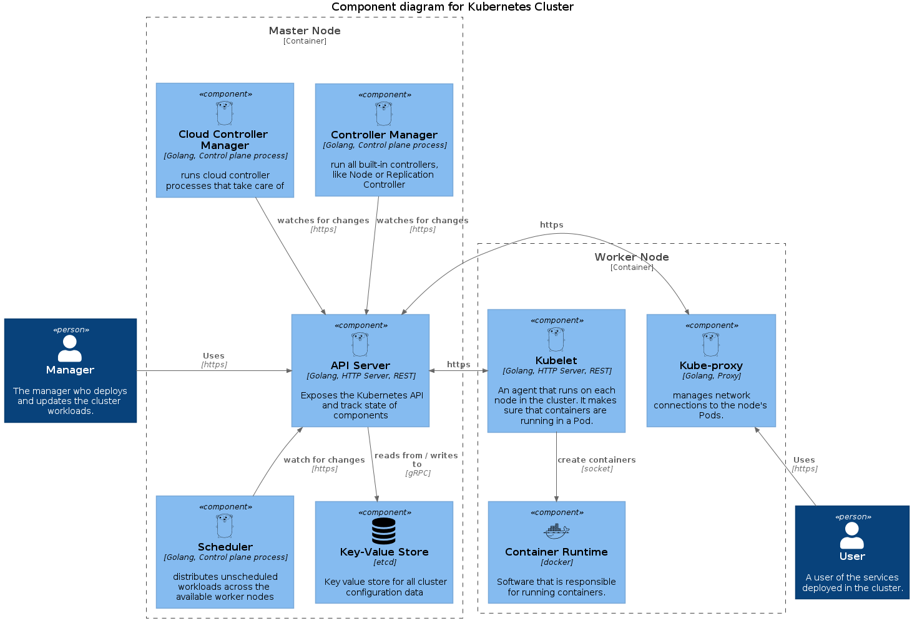

Documentação Arquitetural - Kubernetes
Autores
Este documento foi produzido por Wesley Henrique Araújo Monte.
- Matrícula: 117110739
- Contato: wesley.monte@ccc.ufcg.edu.br
- Projeto documentado: https://github.com/kubernetes/kubernetes
Descrição Arquitetural – Kubernetes
Este documento descreve parte da arquitetura do projeto Kubernetes. Essa descrição foi baseada principalmente no modelo C4.
Descrição Geral sobre o Kubernetes
O Kubernetes é uma plataforma portátil, extensível e de código aberto para o gerenciamento de cargas de trabalho e serviços em contêineres, que facilita a configuração declarativa e a automação. Tem um grande ecossistema de crescimento rápido. Os serviços, suporte e ferramentas do Kubernetes estão amplamente disponíveis.
Objetivo Geral
Implementação de um orquestrador de containers capaz de oferecer alta disponibilidade e escalabilidade de serviços, permitindo que aplicativos sejam implantados e atualizados sem tempo de inatividade e suportam cargas de trabalho variáveis.
Objetivos Específicos
Oferecer uma estrutura para executar sistemas distribuídos organizados em múltiplos contêineres de forma resiliente e de configuração declarativa. Nesse contexto, o Kubernetes deve constantemente trabalhar para manter o estado desejado dos serviços dada sua configuração. Como por exemplo: manter a quantidade de réplicas desejadas, disponibilizar capacidade de armazenamento, acesso externo à aplicação, dentre diversos outros pontos.
Contexto
Para o Kubernetes existe um Gerente que irá declarar as configurações e aplicações que são desejadas no cluster. O Kubernetes está trabalhando para que chegue ao estado desejado. Uma vez que o cluster K8s está no estado desejado, o usuário é capaz de usar as aplicações implantadas no sistema.

Containers
O administrador do cluster envia requisições para o Kubernetes por meio da sua API REST ou por Linha de comando. Todas as requisições são enviadas ao Master Node, que é o Node o qual tem implantado o “cérebro” do cluster. O “cérebro” do cluster são os componentes do “Control Plane”, que tomam decisões globais sobre o cluster. Além disso, o Master Node tem função de gerenciar e orquestrar os Worker Nodes, que são os Nodes onde os contêineres das aplicações são implantados e executados. Uma vez tendo serviços implantados em um Worker Node, o usuário é capaz de acessar a aplicação.

Componentes
O kube-apiserver é o componente da camada de gerenciamento do Kubernetes que expõe a API do Kubernetes. Esse componente é o ponto de acesso para o gerenciamento do cluster. Além disso, o kube-apiserver usa o etcd para armazenar todos os dados do cluster e ele é o único componente que interage com o etcd.
O scheduler é componente da camada de gerenciamento que observa os pods recém-criados sem nenhum nó atribuído, e seleciona um nó para executá-los. Para realizar essa função, o scheduler se comunica via HTTPS com o Api Server, o qual possui as informações sobre os pods.
O controller manager é o componente da camada de gerenciamento que obtém o estado desejado do servidor API. Ele verifica o estado atual dos Nodes, determina se há diferenças e as resolve, se houver. Já o cloud controller manager incorpora a mesma lógica do controller manager mas para recursos específicos da nuvem.
Agora falando sobre os componentes que são executados nos Workers. Temos o kubelet que é executado em todos os nós do cluster. Ele observa as tarefas enviadas pelo kube-apiserver, executa a tarefa e informa o Master Node. Ele também monitora os pods e informa ao kube-apiserver se um pod não estiver totalmente funcional. Com base nessas informações, o Master pode então decidir como alocar tarefas e recursos para atingir o estado desejado.
Quando o kubelet deseja criar ou interromper um container, ele manda a ordem para o container runtime, que é um software ou plug-in de terceiros, como o Docker, que executa essa função.
O kube-proxy é o componente que garante que cada nó obtenha seu endereço IP, implementa iptables locais e regras para lidar com o roteamento e balanceamento de carga de tráfego.
